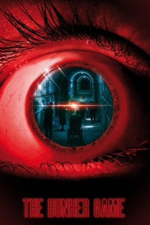

The Bunker Game
Laura, 25, is an actress in a L.A.R.P. (Live Action Function Playing) Game, where the individuals play the survivors of an atomic battle that live underground in a secured bunker. After several mysterious mishaps, the video game is cut off and also the gamers leave the bunker while the staff continue to be behind to investigate the loss of Greg, the mastermind of the video game. They soon find themselves trapped inside and also at risk as they begin to pass away in mystical means as well as the team recognizes that a person or something paranormal is playing a twisted video game with them which rapidly plunges into a distressing defend survival.
Release Date: 2022-03-17
Genre: Action, Mystery, Horror
Duration: 92 min
Production: Eagle Pictures, Kador, Place du Marché Productions, Be Cool Produzioni
Casts: Mark Ryder, Makita Samba, Gaia Weiss, Felice Jankell, Tudor Istodor
Scheduled Time: 9pm-11pm
Dates: 2022-03-17 - 2022-04-12
Release Date: 2022-03-17
Genre: Action, Mystery, Horror
Duration: 92 min
Production: Eagle Pictures, Kador, Place du Marché Productions, Be Cool Produzioni
Casts: Mark Ryder, Makita Samba, Gaia Weiss, Felice Jankell, Tudor Istodor
Scheduled Time: 9pm-11pm
Dates: 2022-03-17 - 2022-04-12